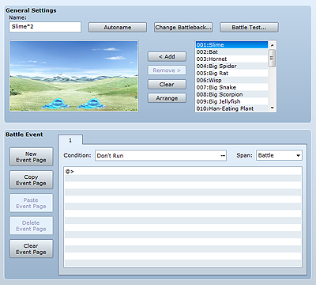
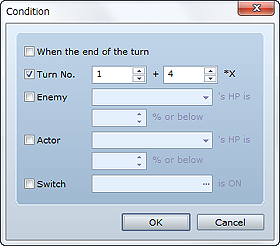

Enemy troop data sets the groups of enemies that appear during the game. Enemies that battle the player in response to map movement or event commands are specified based on this data. Even if you will have a single enemy battle the player, you must prepare troop data for it. Battle events (event processing during battles) are also set up per enemy troop.

The name of the enemy troop you are creating. This setting is only used by the editor and has no impact on game play. Clicking the Autoname button automatically generates a name based on the enemies you added to the troop.
Changes the battle background to display in disposition view. On the left side of the dialog box that appears, specify the parallax background image, and on the right side, specify the ground image. This setting is only used by the editor and has no impact on game play. It will also be used when editing other data.
Runs a test battle with the troop. Use tabs 1 through 4 on the dialog box that appears to specify the actors to include in the battle, equipment, and levels. Parameters based on these settings will be displayed in Status. Clicking OK opens a window and starts the battle test. Close the window when you want to end the battle test.
Enemies that have been added to the troop. You can add up to eight enemies (including enemies of the same type) to a troop.
You can change the position of enemies in disposition view by dragging them. Normally, you can drag them in eight-pixel increments, but hold down the Alt key if you want to drag them in two-pixel increments. Right-clicking and then selecting Appear Halfway allows you to set an enemy that does not appear until the Enemy Appear command is executed in a battle event.
Use the following buttons to edit the settings you have made.
Adds to disposition view the enemy selected by clicking an entry in the enemy list on the right side of the dialog box. You can also add an enemy by double-clicking an entry in the enemy list. The order in which you add enemies will also be reflected in the order of the selection list for enemies that appear in battle.
Deletes the enemy selected by clicking it on disposition view.
Removes all enemies from disposition view.
Arranges enemies in disposition view in line starting from the left in the order they were added.
Battle Event is for setting conditions and execution data for events to execute during battles against the troop. As with map events, battle events can be set up on case-by-case basis, using event pages and spawning conditions.
Use New Event Page, Copy Event Page, Paste Event Page, Delete Event Page, and Clear Event Page on the left side of the dialog box to control your event pages. These commands function in a similar manner to those for map events.

The conditions for executing event page processing. In the dialog box that appears when you click the ... button, activate up to five conditions and set the values for determining when they are satisfied. Unlike with map events, event pages for battle events cannot execute unless at least one condition has been specified. And when more than one event page satisfies a condition, the page with the lowest number will execute.
Set the end of a turn as a condition.
Set the specified number of turns elapsed from the start of battle as a condition. Specify the number of turns since the start of battle in the left field and the number of turn cycles in the right field.
Set enemy HP at or below a specified value as a condition. Specify the target enemy and the HP value (percentage of max HP).
Set actor HP at or below a specified value as a condition. Specify the target actor and the HP value (percentage of max HP).
Set the specified switch being on as a condition.
Specifies when an event page subject to execution is allowed to run.
Only executes the page once conditions have been satisfied after a battle starts. After executing once, the page will not execute again.
Executes the page once per turn if conditions are satisfied.
Repeats page execution as long as conditions continue to be met. Note that the battle may not proceed unless you add some sort of control process, such as a switch.
Use event commands to set the processing to run when Conditions and Span are satisfied. The editing method is the same as with Contents for map events.